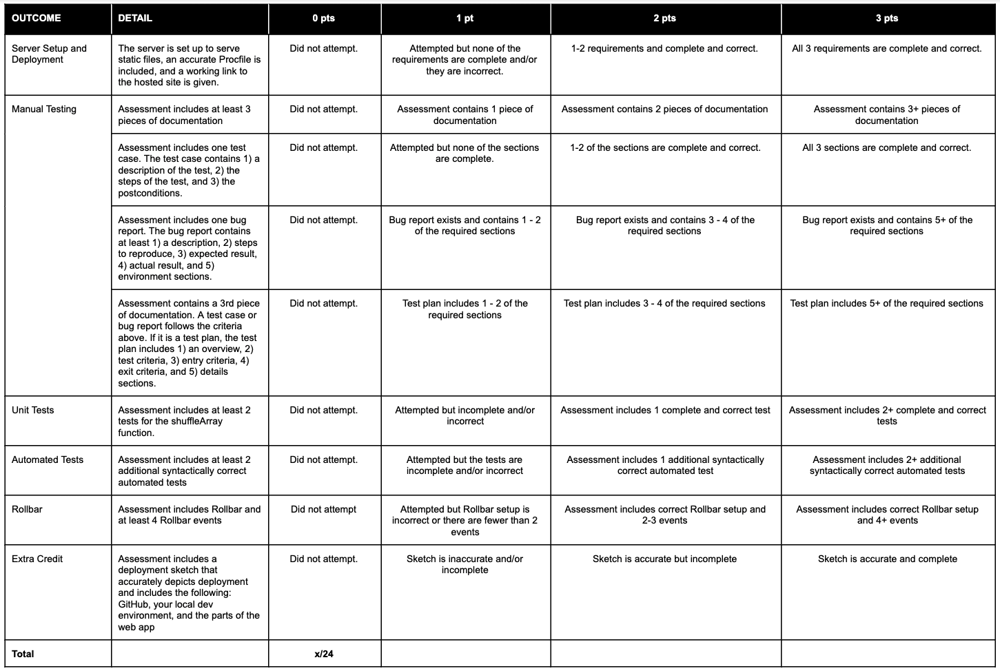

Module 6 Assessment
Introduction
It’s time to practice and solidify the skills you learned in this module.
Independent work
This is an individual assignment. Please do not collaborate with your peers or share your work until the project is reviewed as a class.
Setup
Click here to download the code you need to for this project.
Navigate to the folder you just downloaded on the command line.
Get dependencies installed by running
npm install.
Part 1: Server Setup
Start with setting up your server to serve static files so that it will be ready for deployment.
Near the top of
server.js, set up middleware and/or endpoints that will serve the files from thepublicfolder.Don’t forget the CSS and JS files, you can see the endpoints they’re requesting in
public/index.html.Start the app by running
nodemon.- Visit
http://localhost:3000your web browser and play a few games of Duel Duo. Familiarize yourself with how the interface works. The idea is that the player’s Duo and the computer’s Duo will duel each other. You don’t know the computer’s Duo beforehand. The winner is calculated by adding each Duo’s total health and total attack damage up and then subtracting all of the opposition’s attack from the defender’s health. (Reloading the page will reset your wins and losses.)
- Visit
- Open and read public/index.js. While it’s not important to
understand every line of how the JavaScript code is working in this project, take note of the different functions and what they appear to do to make the app work. Also, explore more of your server so you know what’s going on there too.
Remember, you can kill the nodemon process by pressing
ctrl + c
Part 2: Manual Testing
There are at least 3 known bugs in this game. Draft a plan to test the game, conduct your testing, and document any bugs that you find. Keep track of your testing documentation (plan, cases, and bugs) in a Google doc, Trello, or something similar.
Make sure you play enough times to lose at least once and win at least once.
You need to write at least 1 test case, 1 bug report, and 1 other piece of documentation (a test plan, another case, or another bug report).
When you have finished this section, download your document as a PDF/png, and save it to your project folder.
Part 3: Unit Tests
In the functions.test.ts file, there is a describe block waiting for tests!
Write at least 2 tests in the describe callback for the shuffleArray function.
You may need to read through Jest documentation to find methods/matchers to use.
Some ideas:
check that
shuffleArrayreturns an arraycheck that it returns an array of the same length as the argument sent in
check that all the same items are in the array
check that the items have been shuffled around
Once you’re done, make sure your server is running with nodemon.
Next, in a new terminal window while your server is still running,
run the tests with npm run test. You should see 1 passed in green
when this command runs.
Part 4: Write Automated Tests
Open and read the file called duelDuo.test.ts. There is one automated test included already.
Write at least 2 more tests for the game. Here are some ideas for tests:
Check that clicking the Draw button displays the div with id = “choices”
Check that clicking an “Add to Duo” button displays the div with id = “player-id”
Check that when a bot is “Removed from Duo”, that it goes back to “choices”
Note: You may want to use the sleep function after clicking on an element to make sure
the tests don’t get ahead of themselves.
You can run these with npm run test as well.
Part 5: Rollbar
Set up Rollbar in server.js so that you can log information and errors about your app.
In the Rollbar app, create a new project to get your access token. Use that to connect your app to that project.
In the endpoint handler functions, set up at least 4 rollbar events (not counting ‘Hello World’.)
Part 6: Deployment
Set up your Procfile.
Add and commit your code.
Set up a repo in GitHub.
Connect your remote repo and push your code.
In Heroku, set up a new app that deploys from your repo.
Include the link to your Heroku site in the
heroku.mdfile.Interact with your live site and check Rollbar for logs!
Extra Credit: Deployment Sketch
Draw a sketch/picture of deployment as it relates to the broader web application development process. Be sure to include GitHub, your local development environment, and the different parts of the web application on the sketch.
You should be able to come back to this picture in the future if you need a refresher on what deployment is and how to think about it in the broader picture of web application development.
Be sure to push your code to GitHub for this assessment!
To pass this assessment you must score at least 17/24.
